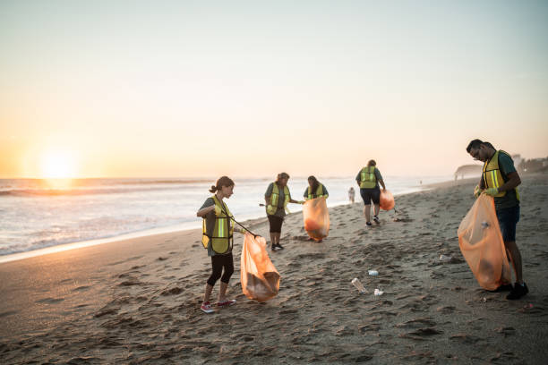
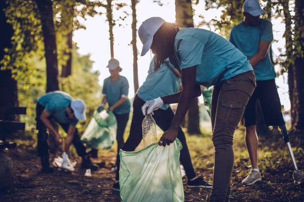
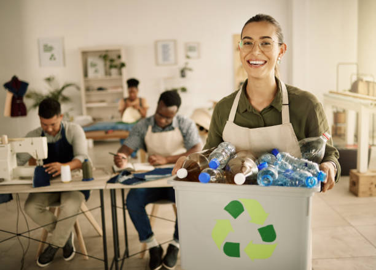
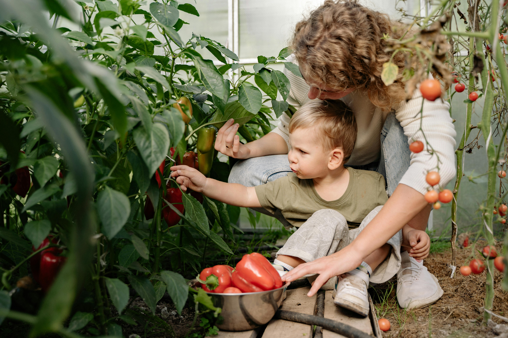
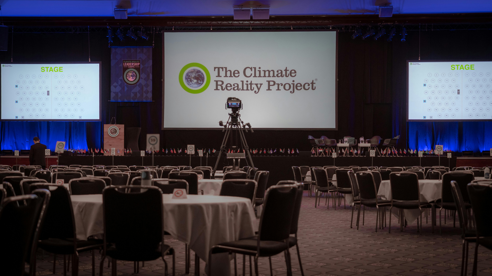

Jornada de Limpieza de Playas
15 de Junio, 2025
Playa de Riazor, A Coruña
Ayúdanos a preservar nuestros océanos y costas. ¡Inscríbete!
Ver DetallesDescubre una variedad de eventos comprometidos con la sostenibilidad y el impacto positivo.

15 de Junio, 2025
Playa de Riazor, A Coruña
Ayúdanos a preservar nuestros océanos y costas. ¡Inscríbete!
Ver Detalles
22 de Julio, 2025
Parque de Santa Margarita, A Coruña
Únete a la limpieza del Parque que rodea la Casa de las Ciencias en A Coruña
Ver Detalles
05 de Agosto, 2025
Plaza del Obelisco, A Coruña
Explora productos orgánicos, talleres de reciclaje y charlas sobre vida sostenible.
Ver Detalles
10 de Septiembre, 2025
Centro Comunitario, Barrio Verde
Aprende a cultivar tus propios alimentos en espacios reducidos.
Ver Detalles
20 de Octubre, 2025
Sala de Audiciones, Plaza Mayor
Disfruta de una conferencia profesional sobre sostenibilidad.
Ver Detalles